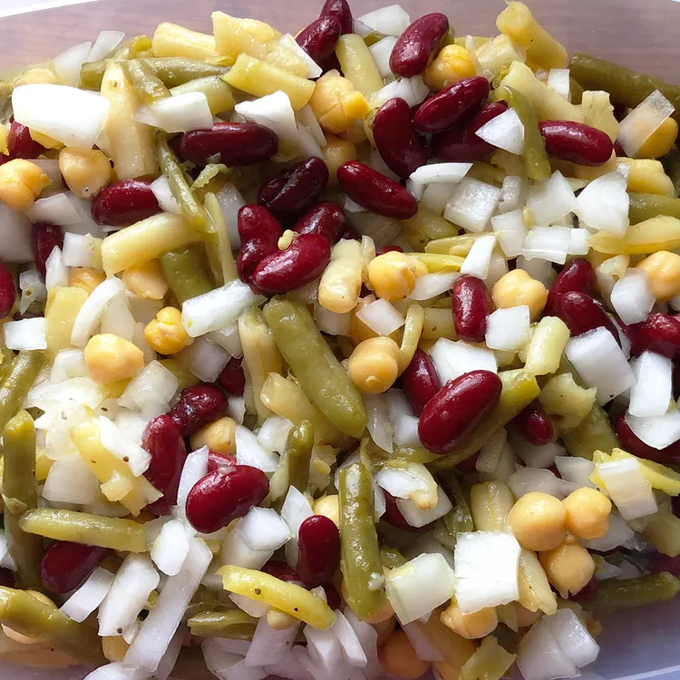

Description
This tasty three bean salad is great for buffets, summer picnics, and cookouts. It's easy to make but tastes best when chilled for at least 12 hours. It keeps well and serves a lot of people.
Ingridients
- Beans: The three beans in this salad are green beans, wax beans, and kidney beans. Some reviewers suggest adding a can of chickpeas. It's easiest to use canned beans, but you can use freshly cooked beans if you like.
- Onion: Slice one white or yellow onion into thin rings.
- Sugar: This three bean salad recipe calls for ¾ cup white sugar, but you can use less if you'd like it a little less sweet.
- Oil and Vinegar: Distilled white vinegar and vegetable oil come together to make a simple salad dressing.
- Seasonings: This recipe is simply seasoned with salt, pepper, and celery seed.